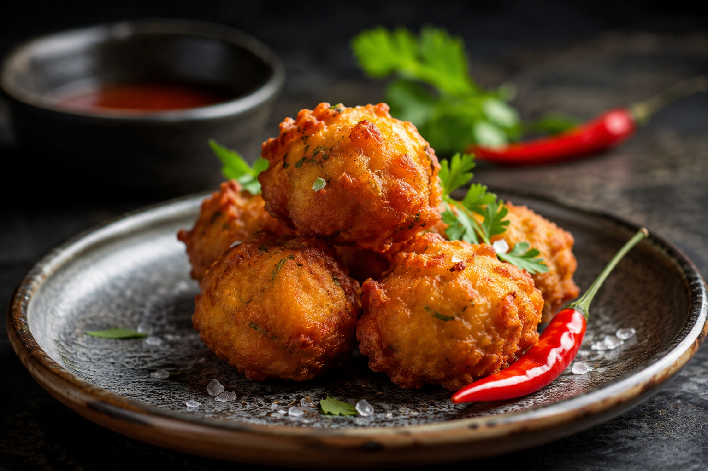

Les Bonbons piments
Incontournables de la culture "street food" locale, les bonbons piments sont les rois absolus de l'apéritif et des marchés forains de La Réunion. Ces petites bouchées frites, dégustées chaudes à tout moment de la journée, cachent sous leur robe dorée un cœur tendre d'une richesse aromatique explosive.
Confectionnés à base de pois du Cap (haricots de Lima) broyés, ils sont généreusement relevés d'un bouquet d'herbes et d'épices fraîches : curcuma, gingembre, coriandre, oignons verts et piments émincés. Un contraste saisissant entre croustillant extérieur et fondant intérieur.
L'histoire et le secret des Bonbons Piments
Les bonbons piments tirent leurs origines de l'immigration indienne musulmane (les "Zarabes") arrivée sur l'île au XIXe siècle, s'inspirant directement du *vada* indien. Au fil du temps, la recette s'est créolisée pour devenir un emblème national partagé par toutes les communautés de l'île.
La préparation traditionnelle exige de la patience. Le premier secret réside dans le traitement des pois du Cap : ils doivent tremper dans l'eau froide pendant au moins 12 heures. L'étape la plus minutieuse consiste à retirer intégralement leur peau fine à la main avant de les broyer, afin d'obtenir une pâte parfaitement lisse et digeste.
Le second secret repose sur la texture de la pâte et le façonnage. Les pois ne doivent pas être réduits en purée liquide, mais conserver une texture légèrement granuleuse. On y incorpore du curcuma pays, du gingembre pilé, du cumin, des oignons verts et de la coriandre fraîche. Les cuisinières forment ensuite de petites galettes au creux de la main et y dessinent un petit trou central avec le doigt : cette astuce ancestrale garantit une cuisson parfaitement uniforme au moment du bain de friture.
Plongés dans une huile bien chaude mais non fumante, ils dorent lentement pour cuire à cœur sans brûler. Ils se dégustent traditionnellement tièdes, nature ou glissés dans un morceau de pain frais, accompagnés d'un punch maison ou d'une boisson fraîche.